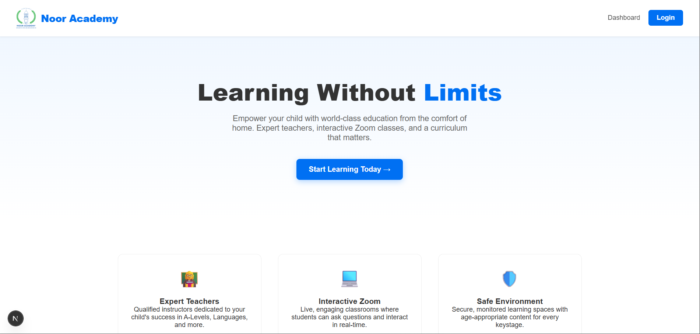

Admin & IT Support
Admin & IT Support
Noor Academy Web Application (In Progress)
Next.js / Prisma / PostgreSQL / React / Role-Based Access / Rest API / SQL integration
Developing a comprehensive web application for Noor academy, enabling students to view their timetables, access course materials, and track their progress. The application features a user-friendly interface and robust backend functionality, providing an efficient platform for students to manage their academic activities.